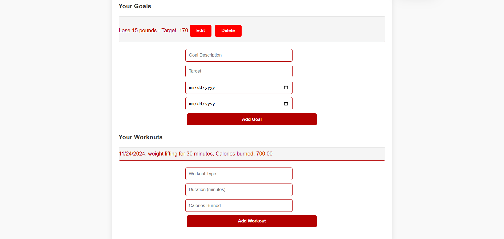
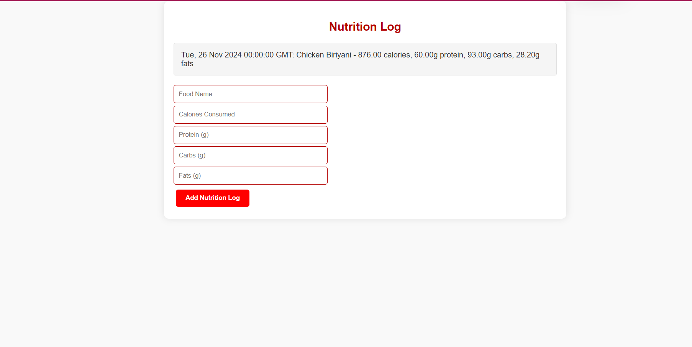
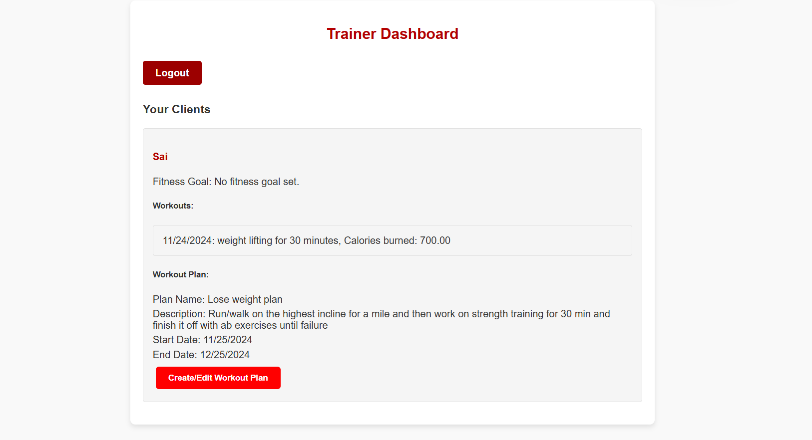
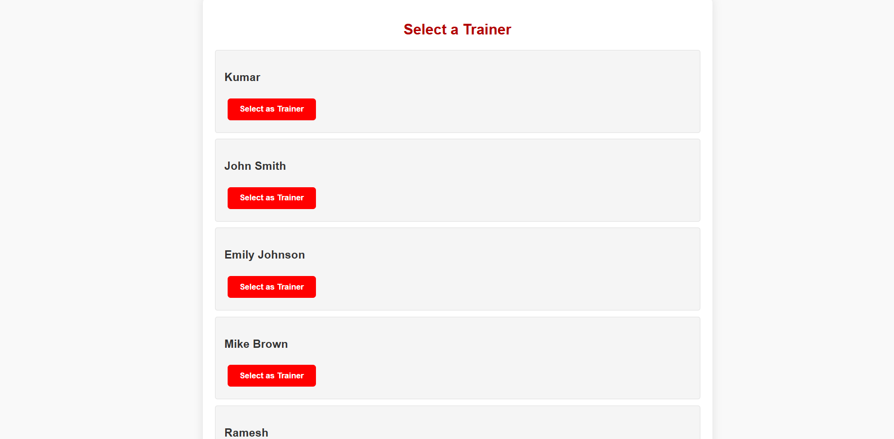
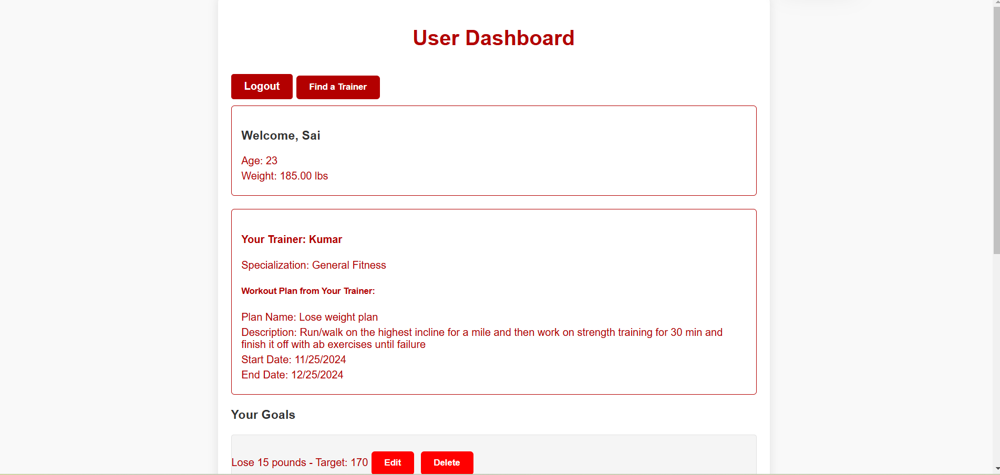
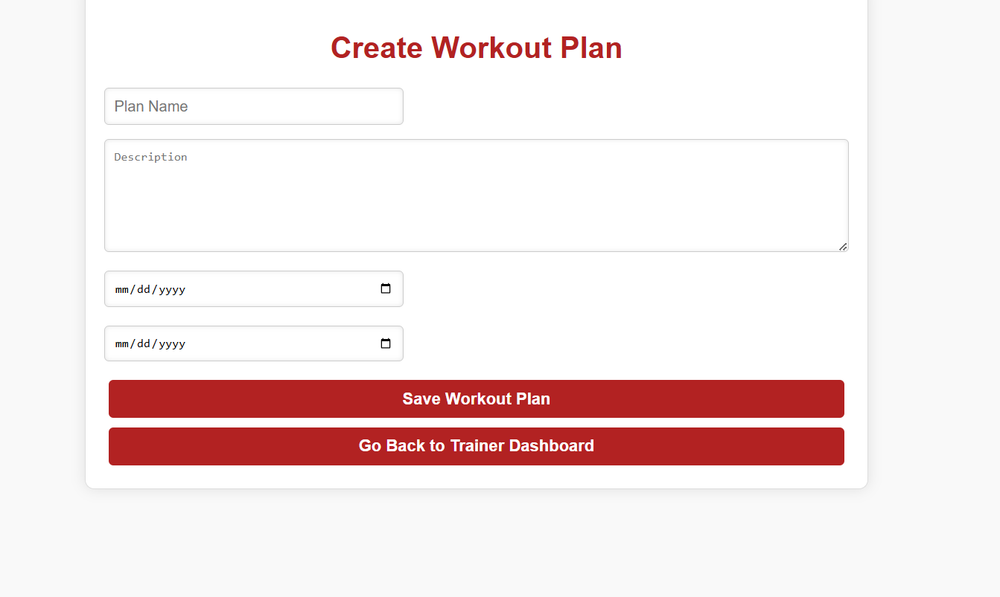

PRTracker
Project Overview
This document represents the final submission of our group project. It includes the design, results of tests, sample outputs, and a narrated video presentation that showcases the database design and implementation.
Table of Contents
Repository and Video Links
Web Interface Design
Our project uses a modern web stack for the front end and back end to provide an efficient, intuitive user experience.
Front End: React
For the front end, we used React.js, a popular JavaScript library for building user interfaces. React’s component-based structure allowed us to create reusable UI components that make our interface modular and easy to maintain. The dynamic rendering capabilities of React enable smooth transitions between different views, allowing for a more interactive experience. We utilized React’s state and props to manage the various states across our components, such as user details, goals, workouts, and nutrition logs.
React Router was used to manage navigation across different pages, such as the user dashboard, trainer selection, nutrition log, and workout plan pages. This allowed us to create a single-page application (SPA) where different components render seamlessly, improving the user experience by avoiding page reloads.
We also used CSS for styling, focusing on a clean and intuitive interface. The design emphasizes user-friendliness, with red-themed buttons for better visibility and consistency across all pages.
Back End: Flask
For the backend, we used Flask, a lightweight and flexible Python web framework. Flask was chosen for its simplicity and the ease of integrating RESTful APIs, which were instrumental in connecting our front end with the database. Using Flask, we built various API endpoints for handling CRUD operations for goals, workouts, trainers, and nutrition logs.
We designed our REST API to handle requests for each entity. For example: - GET requests are used to retrieve user details, goals, workouts, and nutrition logs. - POST requests allow users to add new goals, workouts, and nutrition entries. - PUT requests are used to edit existing goals and workout plans. - DELETE requests provide functionality to remove goals.
Flask’s lightweight nature allowed us to quickly develop and test these endpoints without unnecessary overhead. Moreover, by employing Flask extensions such as Flask-CORS, we handled cross-origin requests to ensure seamless communication between our frontend and backend servers.
Flask also integrated well with SQLAlchemy, which we used for object-relational mapping (ORM). This enabled us to interact with the database in a Pythonic way, simplifying complex queries and operations on the database.
Screenshots
Below are the screenshots of various parts of our application, each accompanied by an explanation of their purpose and functionality.
Goals and Workout Page

The “Goals and Workout” page allows users to view their current fitness goals, add new goals, and log their workouts. Users can edit or delete existing goals as necessary. This page supports CRUD operations for both goals and workouts, allowing users to manage their fitness journey efficiently.
Nutrition Page

The “Nutrition Log” page provides users with the ability to track their dietary intake. Users can log food items along with details like calories, protein, carbs, and fats. The aim is to give users visibility into their nutrition, helping them align their diet with their fitness goals.
Trainer Dashboard

The “Trainer Dashboard” is where trainers can view details of their clients, including workout logs and assigned workout plans. This allows trainers to manage their clients effectively, create new workout plans, and monitor progress.
Trainer Selection Page

The “Trainer Selection” page allows users to browse available trainers and select one to work with. Each trainer card displays their specialization, and the user can assign a trainer by clicking the provided button.
User Dashboard Page

The “User Dashboard” page is the main interface for users to see their details, including assigned trainer information, workout plans, goals, and workouts. The dashboard serves as the central point of interaction for managing all aspects of a user’s fitness journey.
Workout Plan Page

The “Workout Plan” page allows trainers to create or edit personalized workout plans for their clients. The trainer can define the plan name, description, and specify the start and end dates. This helps in providing a structured workout routine for each client.
Reports
Our web application includes a Reports page, featuring 20 queries selectable from a menu. Each report provides insights into the data stored in our database, such as user activity, trainer assignments, popular workouts, and nutrition statistics. The reports are generated using SQLAlchemy, and each one runs efficiently to display information in real-time.
Future Considerations
If we had more time, we would expand the application to include additional features, such as: - Integration with Wearable Devices: Connect to wearable devices (e.g., Fitbit, Apple Watch) to automatically log workouts and steps. - Enhanced Analytics: Provide more detailed reports on user progress, trends in nutrition and workouts, and predictive insights using machine learning. - Improved User Experience: Add animations and further refine the UI to make the application even more user-friendly. - Mobile Application: Develop a mobile version of the application using React Native to increase accessibility.
Reflections on the Project
The project was a valuable learning experience that allowed us to implement a full-stack application using industry-relevant technologies. While we achieved most of what we initially intended, there were a few challenges, particularly in managing the integration between the front end and the back end, especially when handling complex data relationships.
We initially planned for more advanced features such as integration with external fitness APIs, but time constraints led us to focus on core functionality. However, we’re satisfied with the final product and believe it provides a solid foundation that can be expanded in the future.
In our video, we demonstrate the full functionality of the web application, including CRUD operations for user goals, workouts, trainer selection, and nutrition logging. We also discussed possible future enhancements and reflected on the challenges and successes of the project.